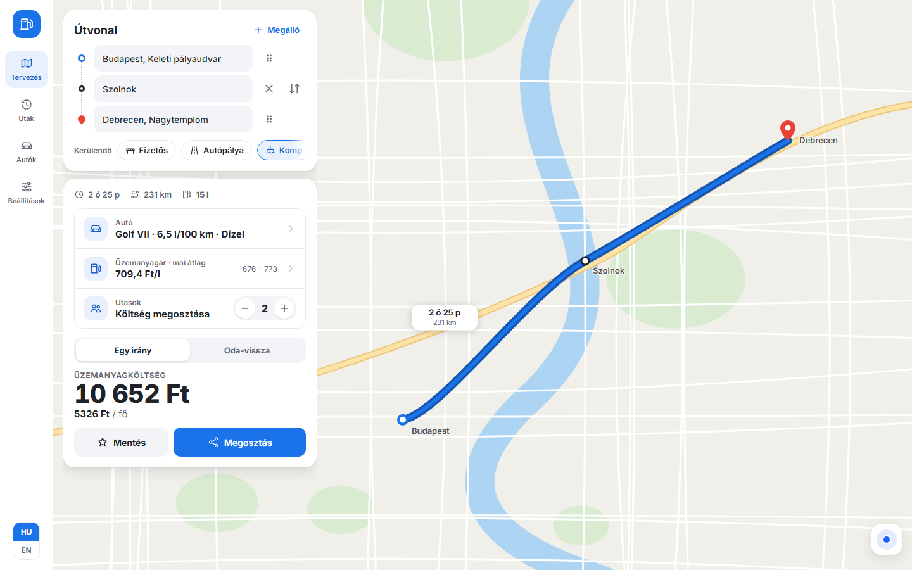
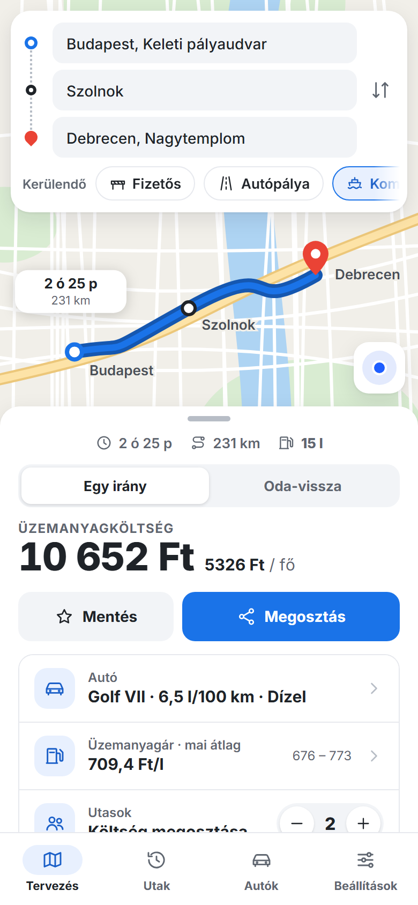
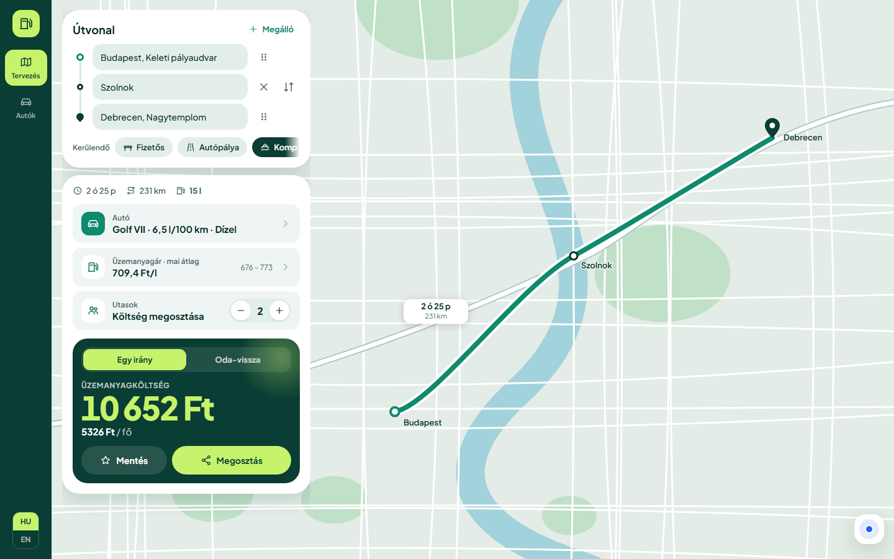
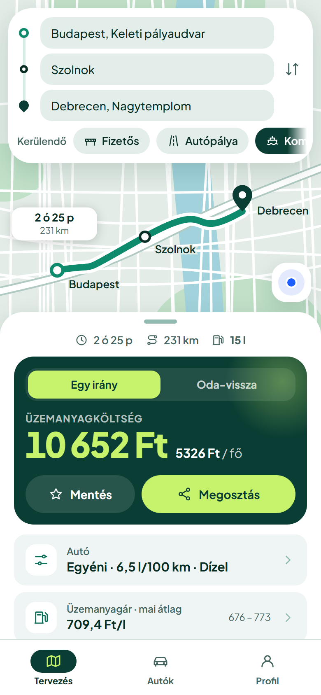
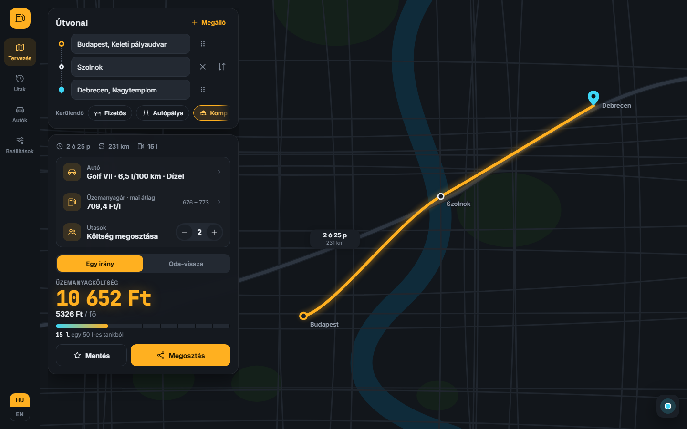
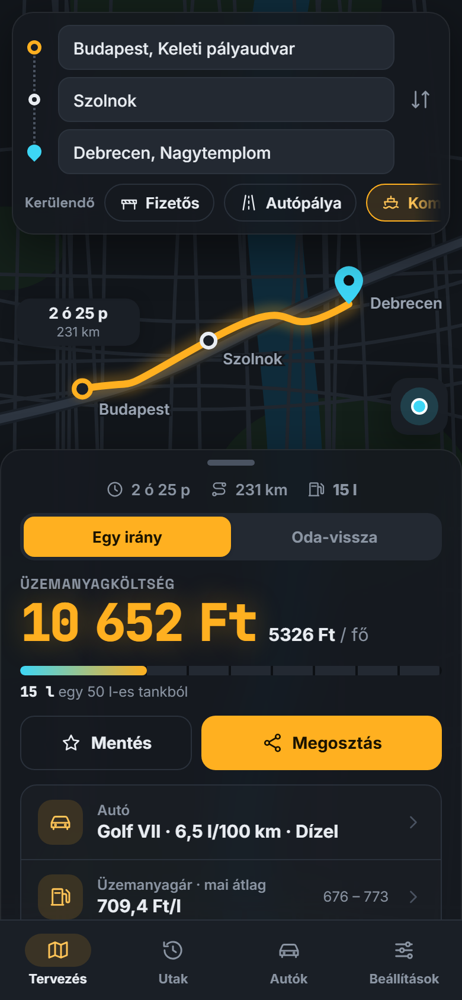

FuelPlan redesign: visual directions
One key screen (a planned trip with its cost) in three styles, each at phone (390px) and desktop (1440px) size. All three use the same structure and flow; only the visual language differs. The steppers, chips and the one-way/round-trip toggle work in the live versions. Pick one (or a mix), and the full prototype gets built in that style.
Shared concept: what changes compared to today
- One flow instead of two tabs: route → car → cost on a single screen. The cost updates live, so there is no Calculate button and no alert pop-up.
- Map first: on phones, the route card sits on top and the trip details in a bottom sheet. On desktop, a floating panel sits next to an icon rail.
- New navigation: Plan · Trips (history and favourites) · Cars (saved profiles) · Settings. The HU/EN switch is in the rail on desktop and in Settings on mobile.
- Multiple stops (with drag to reorder and swap), plus avoid-chips for tolls, motorways and ferries.
- Price filled automatically with today's average, showing the min–max range. Tap to override.
- The result is the hero: total, per person, and One-way / Round trip. Save and Share are right there.
- New icon set: 24px line icons with a 1.75px stroke, used the same way in all three directions.
A. Clean, map-native
Open live →Calm and familiar, like Google or Apple Maps. White surfaces, soft shadows, one blue accent.


Strengths
- Instantly understandable; nothing to learn
- The map stays the star
- Easiest to build and keep consistent
Risks
- Looks generic, with little brand personality
- The cost doesn't stand out as much
Palette
B. Bold & friendly (chosen · now with saved cars)
See 6 palettes → Open live → Cars spec →A confident brand: fuel-green and lime, big rounded tiles, and the cost as a dark green hero card.


Strengths
- Memorable, with its own identity
- The answer ("how much?") jumps out immediately
- Friendly and playful, good for sharing with friends
Risks
- The strong colour can get loud if overused
- Lime on dark green needs care for accessibility (fine at large sizes)
Palette
C. Dark dashboard
Open live →Feels like a car's instrument cluster: dark glass panels, a glowing amber route, a monospaced cost and a fuel gauge.


Strengths
- Distinctive and premium
- Comfortable at night and in the car
- The fuel gauge makes the litres tangible
Risks
- Dark maps are harder to read in daylight (would need a light mode too)
- More visual effects to maintain